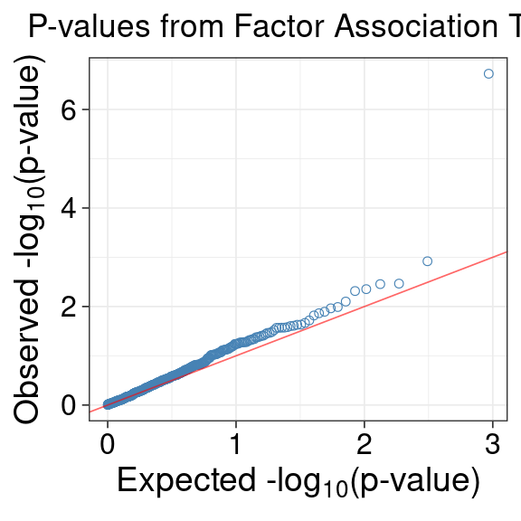
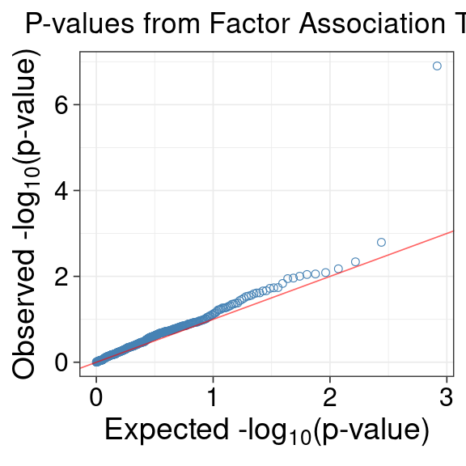
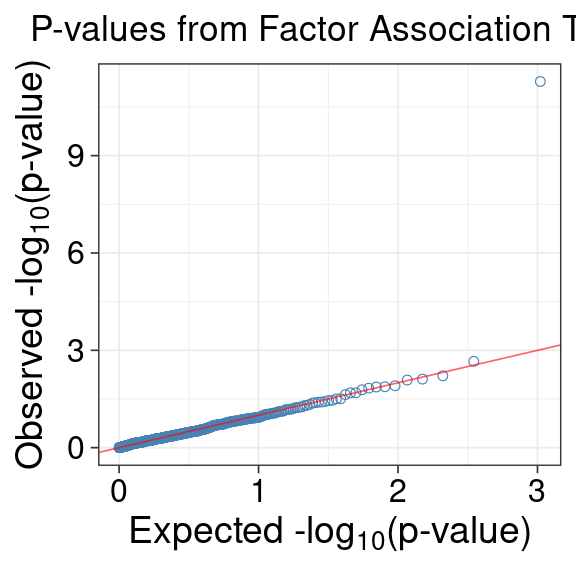
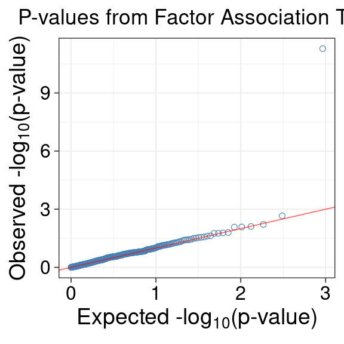

ACAT for specific pairs
XSun
2025-11-15
Last updated: 2025-12-02
Checks: 6 1
Knit directory: factor_analysis_new/
This reproducible R Markdown analysis was created with workflowr (version 1.7.0). The Checks tab describes the reproducibility checks that were applied when the results were created. The Past versions tab lists the development history.
The R Markdown file has unstaged changes. To know which version of
the R Markdown file created these results, you’ll want to first commit
it to the Git repo. If you’re still working on the analysis, you can
ignore this warning. When you’re finished, you can run
wflow_publish to commit the R Markdown file and build the
HTML.
Great job! The global environment was empty. Objects defined in the global environment can affect the analysis in your R Markdown file in unknown ways. For reproduciblity it’s best to always run the code in an empty environment.
The command set.seed(20221201) was run prior to running
the code in the R Markdown file. Setting a seed ensures that any results
that rely on randomness, e.g. subsampling or permutations, are
reproducible.
Great job! Recording the operating system, R version, and package versions is critical for reproducibility.
Nice! There were no cached chunks for this analysis, so you can be confident that you successfully produced the results during this run.
Great job! Using relative paths to the files within your workflowr project makes it easier to run your code on other machines.
Great! You are using Git for version control. Tracking code development and connecting the code version to the results is critical for reproducibility.
The results in this page were generated with repository version db24bc1. See the Past versions tab to see a history of the changes made to the R Markdown and HTML files.
Note that you need to be careful to ensure that all relevant files for
the analysis have been committed to Git prior to generating the results
(you can use wflow_publish or
wflow_git_commit). workflowr only checks the R Markdown
file, but you know if there are other scripts or data files that it
depends on. Below is the status of the Git repository when the results
were generated:
Unstaged changes:
Modified: analysis/revision_acat_specific_pairs.Rmd
Note that any generated files, e.g. HTML, png, CSS, etc., are not included in this status report because it is ok for generated content to have uncommitted changes.
These are the previous versions of the repository in which changes were
made to the R Markdown
(analysis/revision_acat_specific_pairs.Rmd) and HTML
(docs/revision_acat_specific_pairs.html) files. If you’ve
configured a remote Git repository (see ?wflow_git_remote),
click on the hyperlinks in the table below to view the files as they
were in that past version.
| File | Version | Author | Date | Message |
|---|---|---|---|---|
| Rmd | db24bc1 | XSun | 2025-11-25 | update |
| html | db24bc1 | XSun | 2025-11-25 | update |
| Rmd | 07dd710 | XSun | 2025-11-24 | update |
| html | 07dd710 | XSun | 2025-11-24 | update |
| Rmd | 63a542f | XSun | 2025-11-18 | update |
| html | 63a542f | XSun | 2025-11-18 | update |
| Rmd | 3b77f58 | XSun | 2025-11-18 | update |
| html | 3b77f58 | XSun | 2025-11-18 | update |
| Rmd | 23a11ad | XSun | 2025-11-17 | update |
| html | 23a11ad | XSun | 2025-11-17 | update |
| Rmd | ca1aa60 | XSun | 2025-11-16 | update |
| html | ca1aa60 | XSun | 2025-11-16 | update |
| Rmd | ea5a468 | XSun | 2025-11-16 | update |
| Rmd | c167544 | XSun | 2025-11-15 | update |
| html | c167544 | XSun | 2025-11-15 | update |
Introduction
We examine top pairs with low noMHC_trait_null p-values here, as well as some interesting pairs.
library(ggplot2)
library(gridExtra)
library(htmltools)
library(DT)
library(knitr)
library(dplyr)
celltypes <- c("B_cell","CD14_positive_monocyte","CD15_positive_leukocyte","platelet","T_cell","thymocyte")
types <- c("B cell (CD19+)","Monocyte (CD14+)","Granulocyte (CD15+)","Platelet","T cell (CD4+)","T cell (CD8+)")
names(celltypes) <- types
names(types) <- celltypes
qqplot <- function(pvalues,title=NULL) {
pval <- pvalues[complete.cases(pvalues)]
title <- title
plotdata <- data.frame(observed = -log10(sort(as.numeric(pval))),
expected = -log10(ppoints(length(pval))))
qq <- ggplot(plotdata) + theme_bw(base_line_size =0.3) +
geom_point(aes(expected, observed), shape = 1, size = 1.5,color = "steelblue") +
geom_abline(intercept = 0, slope = 1, alpha = 0.6, color = "red") +
ggtitle(title) + theme(plot.title = element_text(hjust = 0.5)) +
labs(x = expression(paste("Expected -log"[10],"(p-value)")),
y = expression(paste("Observed -log"[10],"(p-value)"))) +
theme(axis.title.x = element_text(size = 14),
axis.text.x = element_text(size = 12, color = "black"),
axis.title.y = element_text(size = 14),
axis.text.y = element_text(size = 12, color = "black") )
return(qq)
}
DT::datatable(matrix())Table — Top 10 pairs across all celltypes
In this table, each row corresponds to one supporting SNP for a given factor–trait pair.
A supporting SNP is defined as any SNP with FDR < 0.2 in the factor ~ SNP association test.
For some pairs, no SNP passes the FDR < 0.2 threshold (e.g., the pair Granulocyte (CD15+) – 04061_PC5 – lymphc-ebi-a-GCST90002388). In those cases, we select the SNP with the smallest FDR as the supporting SNP.
Because a single factor–trait pair can have multiple supporting SNPs, the columns celltype, trait, factor, and pathway repeat across multiple rows. The table is organized at the SNP level so we can display per-SNP information, including:
- Nearby genes (genes within ±100 kb)
- p_exposure: SNP–factor association p-value
- fdr_exposure: corresponding FDR
- p_outcome: SNP–trait association p-value from GWAS
and per-pair information:
- ACAT p-values (trait-null and no-MHC versions)
- num_supp_SNP: total number of supporting SNPs for the pair
- num_supp_SNP_MHC: number of supporting SNPs located in the MHC region
- suppSNP: the specific supporting SNP represented by this row (only at FDR < 0.2 cutoff)
Thus, each row provides SNP-level detail, while the repeated pair-level identifiers indicate that these SNPs all contribute to the same ECT test for that factor–trait pair.
acat_allcelltypes <- c()
for (celltype in celltypes) {
# Load summary
file <- sprintf(
"/project/xinhe/xsun/pathway_factor/analysis/1.ECT_v2/ECT_summary_final/%s_ECT_summary_EUR_SLEremoved_noMHCadded.RDS",
celltype)
acat_celltype <- readRDS(file)
acat_allcelltypes <- rbind(acat_allcelltypes, acat_celltype)
}
acat_allcelltypes <- acat_allcelltypes[order(acat_allcelltypes$acat_p_correct_noMHC_traitnull, decreasing = F),]
acat_allcelltypes <- acat_allcelltypes[1:10,]
merge_table_top10 <- c()
for (i in seq_len(nrow(acat_allcelltypes))) {
celltype <- acat_allcelltypes$celltype[i]
trait <- acat_allcelltypes$trait[i]
factor <- acat_allcelltypes$factor[i]
pathway <- acat_allcelltypes$pathwayName[i]
p_ECT <- acat_allcelltypes$p_ECT[i]
ECT_FDR_5suppSNP <- acat_allcelltypes$ECT_FDR_5suppSNP[i]
num_supp_SNP <- acat_allcelltypes$num_supp_SNP[i]
num_supp_SNP_MHC <- acat_allcelltypes$num_supp_SNP_MHC[i]
acat_p_correct_traitnull <- acat_allcelltypes$acat_p_correct_traitnull[i]
acat_p_correct_noMHC_traitnull <- acat_allcelltypes$acat_p_correct_noMHC_traitnull[i]
# ================================
# SUPPORTING SNP DETAILS
# ================================
file_detail <- sprintf(
"/project/xinhe/xsun/pathway_factor/analysis/2.ACAT_v2/results/acat_snpdetail_noMHCtraitnull/%s_%s_%s.RDS",
celltype, factor, trait)
dat_suppsnp <- readRDS(file_detail)
merged_table <- data.frame(
celltype = rep(types[celltype],length =nrow(dat_suppsnp)),
trait = rep(trait,length =nrow(dat_suppsnp)),
factor = rep(factor,length =nrow(dat_suppsnp)),
pathway = rep(pathway,length =nrow(dat_suppsnp)),
p_ECT = rep(p_ECT,length =nrow(dat_suppsnp)),
ECT_FDR_5suppSNP = rep(ECT_FDR_5suppSNP,length =nrow(dat_suppsnp)),
num_supp_SNP = rep(num_supp_SNP,length =nrow(dat_suppsnp)),
num_supp_SNP_MHC = rep(num_supp_SNP_MHC,length =nrow(dat_suppsnp)),
acat_p_correct_traitnull = rep(acat_p_correct_traitnull,length =nrow(dat_suppsnp)),
acat_p_correct_noMHC_traitnull = rep(acat_p_correct_noMHC_traitnull,length =nrow(dat_suppsnp)),
suppSNP = dat_suppsnp$SNP,
genes_nearby = dat_suppsnp$`genes.nearby (+_100kb)`, # <-- modify if your column name differs
p_exposure = dat_suppsnp$pval.exposure,
fdr_exposure = dat_suppsnp$FDR.exposure,
p_outcome = dat_suppsnp$pval.outcome
)
merge_table_top10 <- rbind(merge_table_top10,merged_table)
rownames(merge_table_top10) <- NULL
} # end loop over cell types
snp_tbl <- datatable(
merge_table_top10,
caption = tags$caption(
style = 'caption-side:left; text-align:left; color:black; font-size:140%;',
'Top 10 pairs (ranking by noMHC ACAT p-values) (one row per supporting SNP)'
),
options = list(pageLength = 10)
)
# cat(knit_print(snp_tbl))
snp_tblSNP ~ gene association test for the top 10 pairs
For these top pairs, we check the association of top 1 SNP (in terms of assocation p-values) with top 10 genes with the highest loadings in the pathway.
The association test is: gene expression ~ SNP + covariates, the covariates are the same with the factor ~ SNP association test.
for (i in seq_len(nrow(acat_allcelltypes))) {
trait <- acat_allcelltypes$trait[i]
factor <- acat_allcelltypes$factor[i]
celltype <- acat_allcelltypes$celltype[i]
file_harmo <- paste0("/project/xinhe/xsun/pathway_factor/analysis/1.ECT_v2/assoc_harmonize/",celltype, "-", trait, "_harmo.RDS")
dt_harmo <- readRDS(file_harmo)
dat <- dt_harmo[[factor]]
topsnp <- dat$SNP[which.min(as.numeric(dat$pval.exposure))]
# ---- Header ----
cat(sprintf("<h2 style='margin-top:1px'> top %d - %s</h2>", i, paste0(celltype,"-",factor,"-",trait)))
df <- readRDS(paste0("/project/xinhe/xsun/pathway_factor/analysis/2.ACAT_v2/geneassoc_res/",celltype,"-",factor,"-",trait,".RDS"))
snp_tbl <- datatable(
df,
caption = tags$caption(
style = 'caption-side:left; text-align:left; color:black; font-size:140%;',
paste0("top 1 SNP and top 10 genes for ",celltype,"-",factor,"-",trait,"\n",
", SNP association with pathway = ",dat$pval.exposure[dat$SNP == topsnp])
),
options = list(pageLength = 10)
)
cat(knit_print(snp_tbl))
}top 1 - thymocyte-04724_PC5-AS-finn-b-M13_ANKYLOSPON
top 2 - CD15_positive_leukocyte-04061_PC5-lymphc-ebi-a-GCST90002388
top 3 - CD15_positive_leukocyte-00480_PC4-PLT-ebi-a-GCST90002402
top 4 - CD14_positive_monocyte-04141_PC1-WBC-ebi-a-GCST90002407
top 5 - thymocyte-04979_PC5-WBC-ebi-a-GCST90002407
top 6 - CD14_positive_monocyte-04979_PC4-MCH-ebi-a-GCST90002390
top 7 - CD14_positive_monocyte-04918_PC5-IBD-ebi-a-GCST003043
top 8 - CD14_positive_monocyte-04976_PC4-IBD-ebi-a-GCST003043
top 9 - CD14_positive_monocyte-00520_PC1-WBC-ebi-a-GCST90002407
top 10 - CD14_positive_monocyte-04979_PC4-RBC-ebi-a-GCST90002403
Plots — for the top 10 pairs across all cell types
For the top pairs, we made qqplot for the p-values from factor ~ snp association test.
merge_clean <- merge_table_top10 %>%
mutate(
snp_info = sprintf(
"%s (genes: %s; p_exp=%s; fdr_exp=%s; p_out=%s)",
suppSNP,
genes_nearby,
signif(p_exposure, 3),
signif(fdr_exposure, 3),
signif(p_outcome, 3)
)
) %>%
group_by(
celltype, trait, factor, pathway,
p_ECT, ECT_FDR_5suppSNP,
num_supp_SNP, num_supp_SNP_MHC,
acat_p_correct_traitnull,
acat_p_correct_noMHC_traitnull
) %>%
summarise(
supporting_SNPs = paste(snp_info, collapse = "; "),
.groups = "drop"
)
merge_clean$celltype <- celltypes[merge_clean$celltype]
for (i in seq_len(nrow(merge_clean))) {
celltype <- merge_clean$celltype[i]
trait <- merge_clean$trait[i]
factor <- merge_clean$factor[i]
cat(sprintf("<h2 style='margin-top:1px'> top %d - %s</h2>", i, paste0(celltype,"-",factor,"-",trait)))
file_harmo <- sprintf("/project/xinhe/xsun/pathway_factor/analysis/1.ECT_v2/assoc_harmonize/%s-%s_harmo.RDS",
celltype, trait)
dt_harmo <- readRDS(file_harmo)
dat <- dt_harmo[[factor]]
cat("<b>QQ Plot of p-values from factor association test</b>")
print( qqplot(dat$pval.exposure,
title = "P-values from Factor Association Test") )
}top 1 - CD15_positive_leukocyte-00480_PC4-PLT-ebi-a-GCST90002402
QQ Plot of p-values from factor association
test
| Version | Author | Date |
|---|---|---|
| 07dd710 | XSun | 2025-11-24 |
top 2 - CD15_positive_leukocyte-04061_PC5-lymphc-ebi-a-GCST90002388
QQ Plot of p-values from factor association test
top 3 - CD14_positive_monocyte-04918_PC5-IBD-ebi-a-GCST003043
QQ Plot of p-values from factor association
test
| Version | Author | Date |
|---|---|---|
| 07dd710 | XSun | 2025-11-24 |
top 4 - CD14_positive_monocyte-04976_PC4-IBD-ebi-a-GCST003043
QQ Plot of p-values from factor association test
| Version | Author | Date |
|---|---|---|
| 07dd710 | XSun | 2025-11-24 |
top 5 - CD14_positive_monocyte-04979_PC4-MCH-ebi-a-GCST90002390
QQ Plot of p-values from factor association
test
| Version | Author | Date |
|---|---|---|
| 07dd710 | XSun | 2025-11-24 |
top 6 - CD14_positive_monocyte-04979_PC4-RBC-ebi-a-GCST90002403
QQ Plot of p-values from factor association test
| Version | Author | Date |
|---|---|---|
| 07dd710 | XSun | 2025-11-24 |
top 7 - CD14_positive_monocyte-00520_PC1-WBC-ebi-a-GCST90002407
QQ Plot of p-values from factor association test
| Version | Author | Date |
|---|---|---|
| 07dd710 | XSun | 2025-11-24 |
top 8 - CD14_positive_monocyte-04141_PC1-WBC-ebi-a-GCST90002407
QQ Plot of p-values from factor association
test
| Version | Author | Date |
|---|---|---|
| 07dd710 | XSun | 2025-11-24 |
top 9 - thymocyte-04724_PC5-AS-finn-b-M13_ANKYLOSPON
QQ Plot of p-values from factor association
test
| Version | Author | Date |
|---|---|---|
| 07dd710 | XSun | 2025-11-24 |
top 10 - thymocyte-04979_PC5-WBC-ebi-a-GCST90002407
QQ Plot of p-values from factor association
test
| Version | Author | Date |
|---|---|---|
| 07dd710 | XSun | 2025-11-24 |
#
# for (celltype in celltypes) {
#
# # ---- Header for each cell type ----
# cat(sprintf("<h2 style='margin-top:1px'>Cell type: %s</h2>", types[celltype]))
#
# # Load summary
# file <- sprintf("/project/xinhe/xsun/pathway_factor/analysis/1.ECT_v2/ECT_summary_final/%s_ECT_summary_EUR_SLEremoved_noMHCadded.RDS",
# celltype)
# acat_celltype <- readRDS(file)
# acat_celltype <- acat_celltype[order(acat_celltype$acat_p_correct_noMHC_traitnull), ]
#
# acat_top5 <- acat_celltype[1:5, ]
#
# # ---- Loop over top results ----
# for (i in seq_len(nrow(acat_top5))) {
#
# cat(sprintf("<h3 style='margin-top:1px'>Top %d</h3>", i))
#
# trait <- acat_top5$trait[i]
# factor <- acat_top5$factor[i]
#
# # ================================
# # PAIR DETAILS TABLE
# # ================================
# df <- acat_celltype
# df$celltype <- types[df$celltype]
#
# df_show <- df[df$trait == trait & df$factor == factor, ]
# df_show <- df_show[,c("celltype", "trait", "factor","pathwayName","num_supp_SNP","num_supp_SNP_MHC","p_ECT","acat_p_correct_noMHC_traitnull")]
# pair_tbl <- datatable(
# df_show,
# caption = tags$caption(
# style='caption-side: left; text-align:left; color:black; font-size:140%;',
# 'Pair Details'
# ),
# options = list(pageLength = 10)
# )
#
# cat(knit_print(pair_tbl))
#
#
# # ================================
# # QQ PLOT
# # ================================
# file_harmo <- sprintf("/project/xinhe/xsun/pathway_factor/analysis/1.ECT_v2/assoc_harmonize/%s-%s_harmo.RDS",
# celltype, trait)
# dt_harmo <- readRDS(file_harmo)
# dat <- dt_harmo[[factor]]
#
# cat("<b>QQ Plot of p-values from factor association test</b>")
# print( qqplot(dat$pval.exposure,
# title = "P-values from Factor Association Test") )
#
# # ================================
# # SUPPORTING SNP TABLE
# # ================================
# file_detail <- sprintf("/project/xinhe/xsun/pathway_factor/analysis/2.ACAT_v2/results/acat_snpdetail_noMHCtraitnull/%s_%s_%s.RDS",
# celltype, factor, trait)
# dat_suppsnp <- readRDS(file_detail)
#
# snp_tbl <- datatable(
# dat_suppsnp,
# caption = tags$caption(
# style = 'caption-side:left; text-align:left; color:black; font-size:140%;',
# 'Supporting SNPs'
# ),
# options = list(pageLength = 5)
# )
#
# cat(knit_print(snp_tbl))
# }
# }–>
–>
–>
–> –> –> –>
–> –>
–>
–>
–>
–>
–>
–>
–>
–>
–>
–>
–> –> –> –>
–> –>
–>
–>
–>
–>
–>
–>
–>
–>
–>
–> –> –> –>
–> –>
–>
–>
–>
–>
–>
–>
–>
–>
–>
–> –> –> –>
–> –>
–>
–>
–>
–>
–>
–>
–>
–>
–>
–>
–> –> –> –>
–> –>
–>
–>
–>
–>
–>
–>
–>
–>
–>
–> –> –> –>
–> –>
–>
–>
–>
–>
–>
–>
–>
–>
–>
–>
–> –> –> –>
–> –>
–>
–>
–>
–>
–>
–>
–>
–>
–>
–> –> –> –>
–> –>
–>
–>
–>
–>
–>
–>
–>
–>
–>
–>
–> –> –> –>
–> –>
–>
–>
–>
–>
–>
–>
–>
–>
–>
–> –> –> –>
–> –>
–>
–>
–>
–>
–>
–>
–>
–>
–>
–> –> –> –>
–> –>
–>
–>
–>
–>
–>
–>
–>
sessionInfo()R version 4.2.0 (2022-04-22)
Platform: x86_64-pc-linux-gnu (64-bit)
Running under: CentOS Linux 7 (Core)
Matrix products: default
BLAS/LAPACK: /software/openblas-0.3.13-el7-x86_64/lib/libopenblas_haswellp-r0.3.13.so
locale:
[1] C
attached base packages:
[1] stats graphics grDevices utils datasets methods base
other attached packages:
[1] dplyr_1.1.4 knitr_1.39 DT_0.22 htmltools_0.5.2
[5] gridExtra_2.3 ggplot2_4.0.0
loaded via a namespace (and not attached):
[1] Rcpp_1.0.12 highr_0.9 RColorBrewer_1.1-3 pillar_1.9.0
[5] compiler_4.2.0 bslib_0.3.1 later_1.3.0 jquerylib_0.1.4
[9] git2r_0.30.1 workflowr_1.7.0 tools_4.2.0 digest_0.6.29
[13] gtable_0.3.6 jsonlite_1.8.0 evaluate_0.15 lifecycle_1.0.4
[17] tibble_3.2.1 pkgconfig_2.0.3 rlang_1.1.2 cli_3.6.1
[21] rstudioapi_0.13 crosstalk_1.2.0 yaml_2.3.5 xfun_0.41
[25] fastmap_1.1.0 withr_2.5.0 stringr_1.5.1 htmlwidgets_1.5.4
[29] generics_0.1.2 fs_1.5.2 vctrs_0.6.5 sass_0.4.1
[33] tidyselect_1.2.0 rprojroot_2.0.3 grid_4.2.0 glue_1.6.2
[37] R6_2.5.1 fansi_1.0.3 rmarkdown_2.25 farver_2.1.0
[41] magrittr_2.0.3 whisker_0.4 scales_1.4.0 promises_1.2.0.1
[45] dichromat_2.0-0.1 httpuv_1.6.5 labeling_0.4.2 S7_0.2.0
[49] utf8_1.2.2 stringi_1.7.6